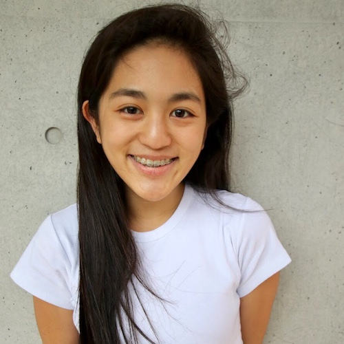
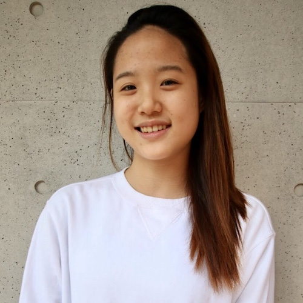
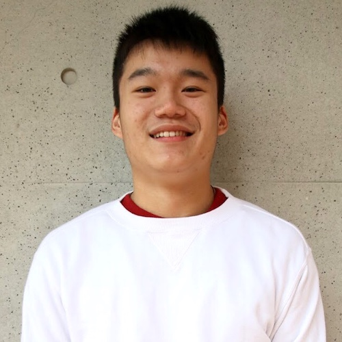
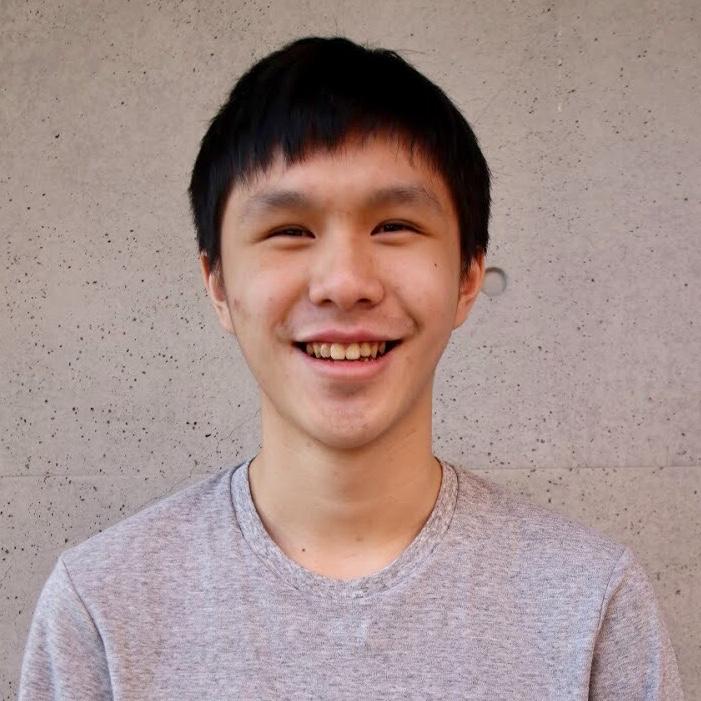
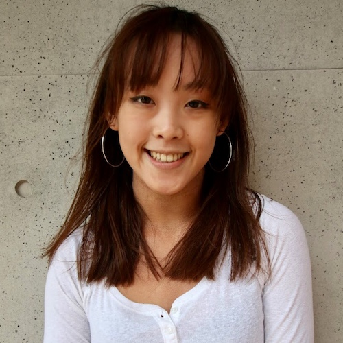

Hey there, I'm !
Let's talk about .
Create my ticket now →
Saturday, January 20th, 2018
Speakers
The TEDx Team
TEDxTaipeiAmericanSchool is organized and run by a student group. Our group of student organizers meet regularly to brainstorm and plan event details.
Nicole Chang
Head Curator
">
Marina Chang
Head Curator
">
Catherine Yeh
Event Host
">
Keanne Chang
Speakers
">
Kevin Yu
Production
">
Chris Chang
Speakers
">
Alex Huang
Technology
">
Florence Liou
Production
">
Iris Huang
Event Host
">
Charlotte Lee
Speakers
">
Alex Lin
Technology
">
Brian Kuo
Technology
">
Li-chun Pan
Design
">
Oliver Feuerhahn
Oliver
">
Ashley Lin
Treasury
">
Sharon Kuo
Publicity
">
Vanessa Su
Marketing
">What is TEDx?
In the spirit of ideas worth spreading, TED has created a program called TEDx. TEDx is a program of local, self-organized events that bring people together to share a TED-like experience. Our event is called TEDxTaipeiAmericanSchool, where x = independently organized TED event. At our TEDxTaipeiAmericanSchool event, TEDTalks video and live speakers will combine to spark deep discussion and connection in a small group. The TED Conference provides general guidance for the TEDx program, but individual TEDx events, including ours, are self-organized.
Read this year's program →